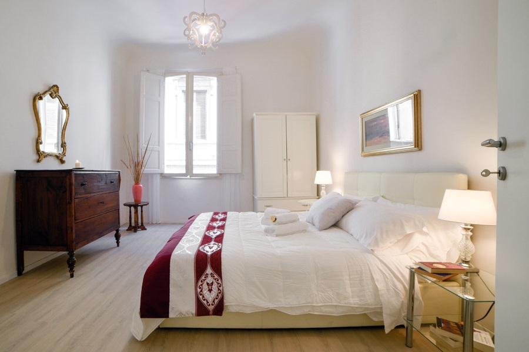
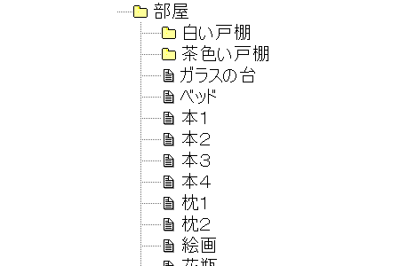

部屋の片付けについて
以下の写真のような部屋がある。今、この部屋を片付けることを考える。

パッと見では十分に片付いているように見える。よく見ると、右下に何冊かある本がやや乱雑かもしれない。
ところで、この部屋は以下の画像のように表現することができる。

これはエクスプローラーの画面で、フォルダとファイルから構成される。
ある空間を外と内に隔てるものがあった場合、それはフォルダの性質を持っていると言える。部屋とは、空間を室外と室内に分けるものであるため、フォルダとみなせる。
写真の部屋の中には、部屋という空間をさらに隔てるものとして「白い戸棚」および「茶色い戸棚」がある。これら戸棚もまたフォルダとみなすことができ、部屋フォルダの中に置かれたフォルダと言える。
写真にはそれ以外にフォルダらしきものは見当たらない。フォルダ以外のものは、すべてファイルと呼ぶことにする。ファイルは単に存在の表現である。
これらの概念を用いて「部屋の片付け」を定義するとすれば、それは「フォルダがある階層にファイルがあれば、その数を減らす」である。
冒頭の本で考える。本は片付け対象の階層に位置するファイルである。よって単にこの階層から取り除けば、それが結果的に片付けとなる。
本をゴミに出す、本を売る、本を茶色い戸棚にしまう、新たに戸棚を買いその中に本をしまう、などはその階層からファイル数を減らす行為に当たるため、片付けである。
一方、本の辺をそろえてガラスの台の上に綺麗に積む、はファイル構成に変化がないので、片付けではない。
写真では戸棚の中がどうなっているかはわからない。が、戸棚の中もやはり空間であるため、同じように考えることができる。
空間に対してこの行為を繰り返していくと、いずれ「片付いた」と呼ばれる状態を迎える。